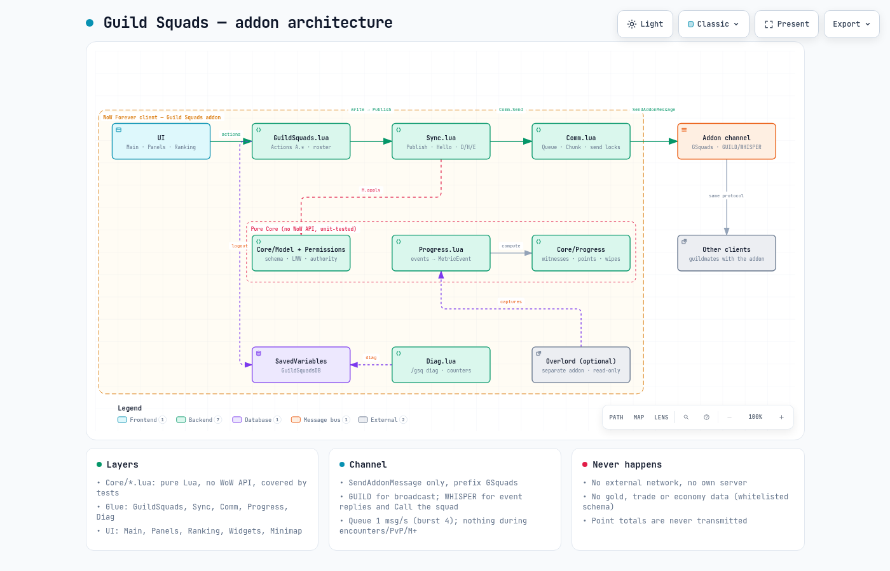
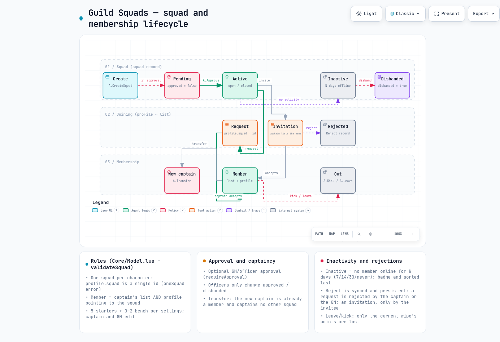
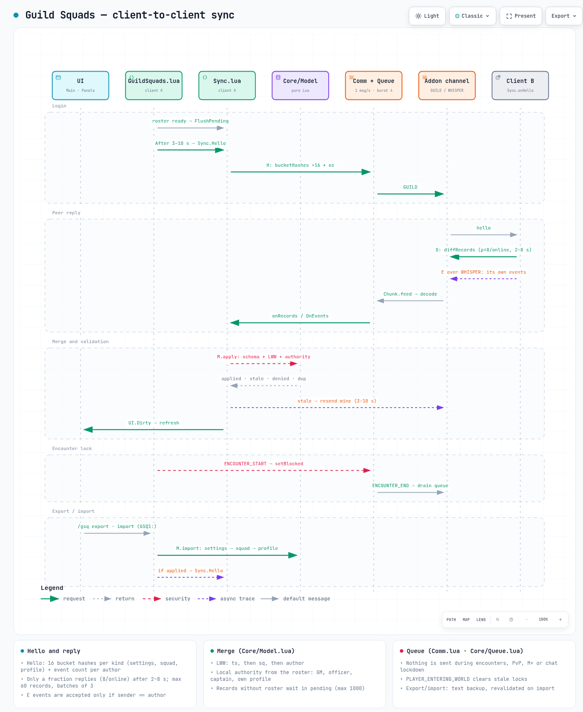
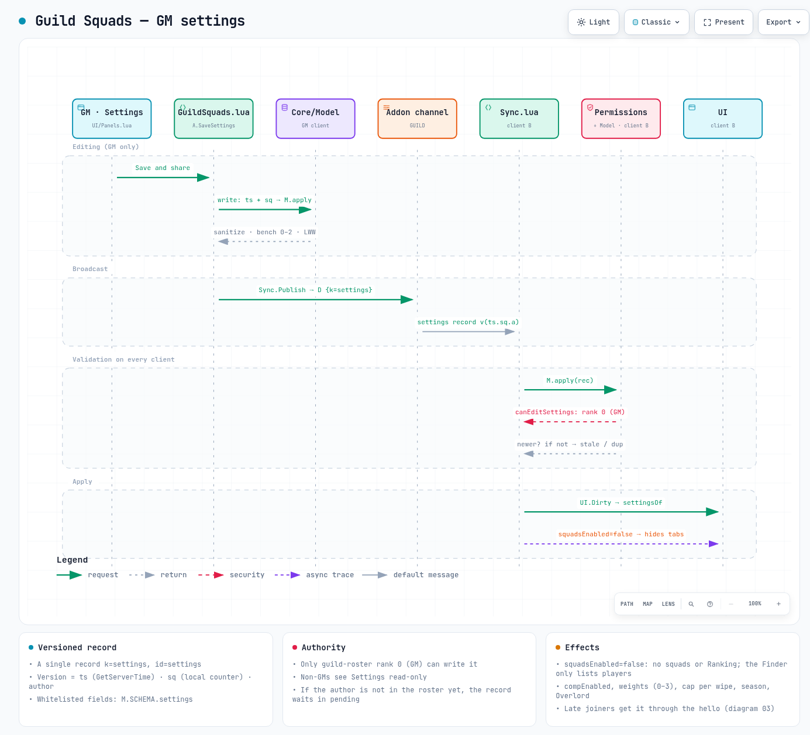
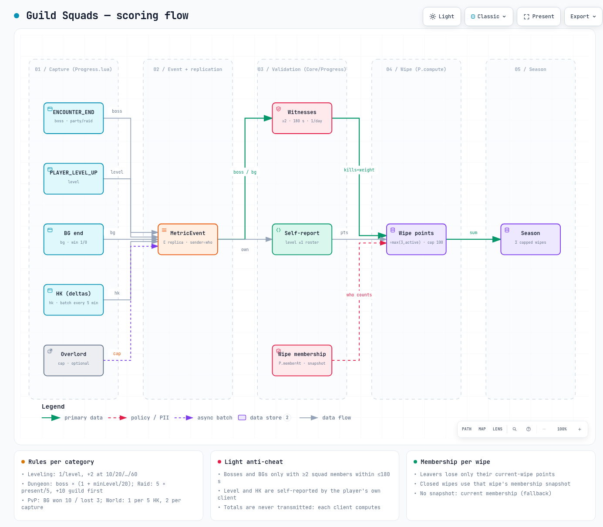
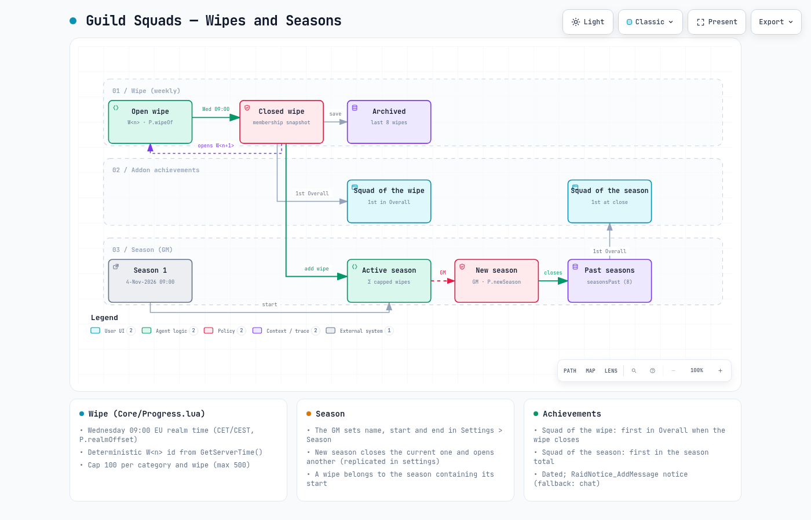
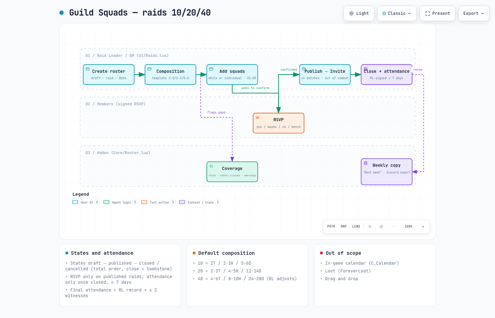
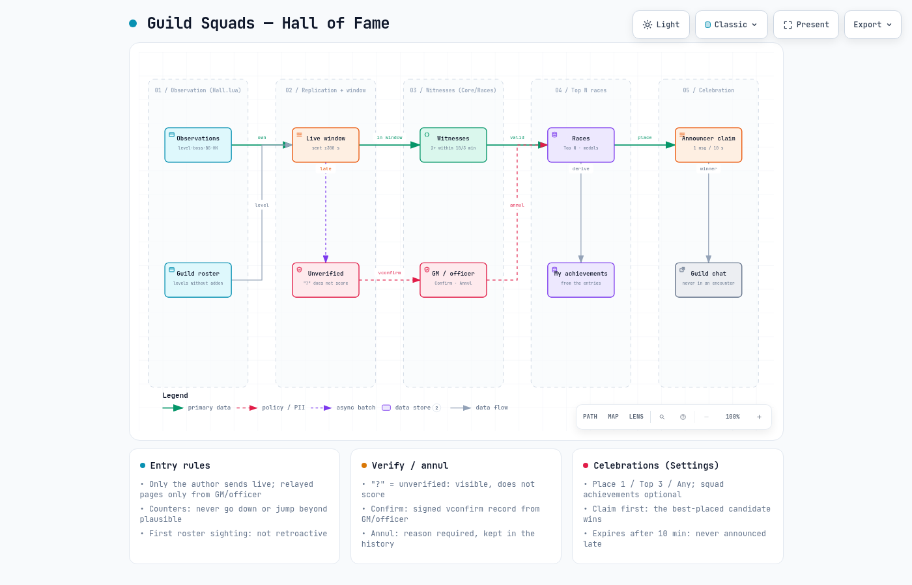

Built with archify from src/*.json. Español → index.html

01-architectureClient modules (pure Core, WoW glue, UI), SavedVariables, GUILD/WHISPER channel, other clients, optional Overlord, diag and what never happens.

02-squad-lifecycleSquad and membership states: create, approve, request/invitation, member, transfer, kick/leave, disband, inactive squad and synced rejections.

03-syncSync sequence: hello with hashes, jittered reply, LWW merge + authority, UI refresh, encounter lock, export/import.

04-gm-settingsThe GM saves the settings: versioned record, broadcast, rank 0 validation on every client and application (e.g. disabled squads hide tabs).

05-scoringPoints flow: events → MetricEvent → replication → per-wipe membership and witnesses → normalisation and cap → wipe → season.

06-wipe-seasonWeekly wipe (Wednesday 09:00 realm time) open → closed → archived; the GM's season and "New season"; wipe and season achievements.

07-raidsRaids 10/20/40: roster, composition, whole squads G1–G8, coverage, RSVP, publish → invite, close + signed attendance, weekly copy. No calendar, no loot.

08-hall-of-fameHall of Fame: observations → live window / unverified "?" → witnesses → Top N races (Confirm/Annul) → achievements → claim → guild chat.